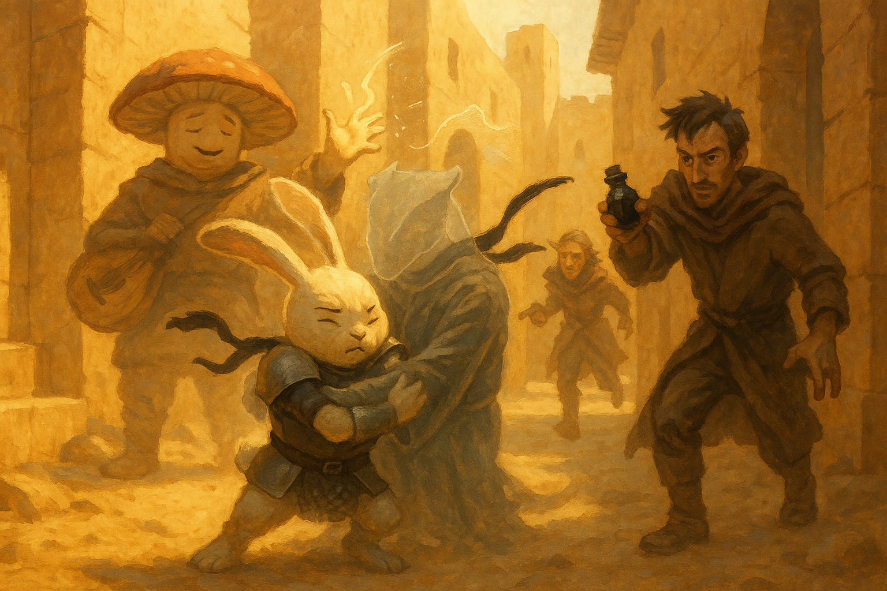

Varrek's Very Bad Day¶
October 13, 2026
Overview¶
With the funerals still hours off, the party flipped a die between the council and the library, and the die said library. There they arrested the wrong man, searched the wrong student, and then walked straight into the right one: Varrek Ashtongue, invisible and waiting to spring a trap of his own. Two captures, one chase through the streets, and a suggestion spell later, the party had what the cult's coded notes never gave them — a name. The Redstone Narrows hide the entrance to the lair of Sicovax, leader of the Undying Flame, and what he wants with the water priestess is revenge.
Key Events¶
- Council or library. The vote split down the middle and was settled by a die: odd, library. The plan was to get there well before the two o'clock funeral services and lay a trap for whoever came to answer the forged notice. Prance tied a black bandana on his right arm — and, on Fizz's advice, a second one beneath it, "to really make it pump."
- The arrest of Bartleby. The University library was nearly empty: a few students and one very old librarian, Bartleby. Prance asked him about Ashtongue, the Undying Four, and death cults in quick succession; the old man cleaned out his ear to be sure he had heard right and went white. Prance decided this was guilt, declared him "this mild-mannered librarian, so-called," and had Krum cuff him like a city watchman. "Boy, why are you arresting me? Do I need to tell your uncle about this?" A request for the library's lending records, made with the man still in an armlock, got the answer it deserved: come back with a writ from a captain of the guard.
- Something moved. While the other two were busy with the librarian, Fizz and Behnsun both caught it — a noise, and a table that shifted by itself. Fizz put a crossbow bolt into a potted bush. Behnsun, who likes books too much to throw fire in a library, sent mage hand to tug at the table. Nothing.
- The wrong student. A student squeezed past the crowd in the aisle, and Fizz — certain they had just been pickpocketed — paid him a gold piece for the privilege of searching him. He had a library card and some cheap spell components. He also had a class with Varrek: a braggart who signs every spell he casts with a big V, and whom nobody had seen in days.
- "Do not force me." Prance turned to the stacks and announced that his arch wizards would reveal the intruder by force. Something answered with a noise, and initiative was rolled. Behnsun raised mage armor, walked toward the sound, and bumped into a scaly claw. Prance ran to the double doors and shut them at his back. Krum slashed at empty air with both daggers and both came away red.
- Out of the air. Behnsun pointed out that an invisible man who has just been stabbed twice ought to have lost his concentration, and the brass dragonborn flickered into view just in time for Fizz's vicious mockery about student hygiene. Varrek misty stepped to the doors and tried to slip past Prance, who tightened his bandana and did not move. ("That's not even a thing we do," said Varrek, of the bandana. "That's something y'all made up.") Adarius tried charm person — "Lad, the intent isn't to kill you" — and met a natural 20. Bartleby, free at last, fled for the door with a hand to his ear and a whispered spell. Prance wrapped the dragonborn up in a grapple and that was that.
- The questions. Varrek admitted he had come early to turn their trap into his. Fizz talked the fire back down his throat; Behnsun turned out his pockets (seven gold and, yes, a library card); Prance complimented his laugh and was told they could be the best of friends. Asked who the Undying Four were, Varrek had no idea — "We never called ourselves that. We're just members of the Undying Flame" — and the flame began to gather under his snout again.
- Suggestion. Fizz cast suggestion: answer our questions truthfully. Varrek's eyes went slack. The words cost him — fire burned in his mouth as he spoke, and he coughed blood across Fizz's face — but they came. The Redstone Narrows are "where the entrance to where Sicovax resides is." Sicovax is the leader. What he wants with Naivara is revenge; on Prance's chest, the amulet thrummed. The other three students, he supposed, had fled, and he did not know where.
- A sliver of daylight. Fizz was weighing "one more dead student on today's funeral pyre" aloud when two city guards, summoned by Bartleby, pushed the doors open. Misty step needs only a word. Varrek was thirty feet down the street before anyone had turned around.
- The chase. Adarius threaded a fire bolt down an alley and hit — "Adarius, is that you, boy?" Fizz's first sleep came up short. Krum's crossbow found him. Fizz offered to pay his tuition. Behnsun's chromatic orb took fifteen more out of him and Prance rabbit-hopped the gap, so when Varrek went invisible again and tried to run past, the rabbit closed his arms on nothing and held it. The second sleep rolled 31 — one point more than Prance had left — and the thing in his arms went limp and became a dragonborn again.
- What to do with him. Bound, gagged, and guarded by a wizard who knows misty step when he hears it. The two guards caught up, saw through Krum's story entirely, and were then stopped dead by Behnsun juggling — they were tabaxi — and sent to watch the rear. The argument that followed was the session's real fight: Fizz wanted Varrek dead in the alley, before a traitor on the council could set him loose; Prance wanted him alive, and his masters warned, for the sake of a better final battle; Krum would not kill a kid; Behnsun pointed out that guards had watched them chase him. The compromise: show the council the forged letter and nothing else, keep Varrek hidden under Adarius's eye, and after the meeting hand him to Velra Nighthollow — the one councillor who trusts nobody either.
Memorable Moments¶
- The heart check. With Krum's arm across his chest and a rabbit shouting about sacrificed students, Bartleby was made to roll a Constitution save to see whether he simply died on the spot. He passed.
- "I like books." Behnsun, asked why he did not just firebolt the suspicious table.
- Darn kids. Varrek, pinned: "I would have gotten away with it if it wasn't for you."
- Home security. Prance: "You tried to kill me this morning, while I was taking a nap." Varrek: "What's wrong with home security?"
- Hugging himself. For one full round the party watched Prance bear-hug an empty patch of street while invisible hands pulled his ears apart and something called him a wascally rabbit. Adarius stood by with a bottle of ink, ready to pour.
- The jugglers' weakness. A deception check of 5, rescued by a sorcerer producing balls from nowhere and a performance of 19. "That's how you get them."
- Freddie's review. In Fizz's pocket: "Why does this rabbit get to be the hero of all his tales? It should be you. I feel like you saved the day." Fizz intends to spend that goodwill later.
- Not feeling very fizzy. Krum, quietly, after the mushroom's third argument for murder. Fizz allowed that reading everyone's minds may be making him cynical — or that it may be mother's magic at work.
Open Threads¶
- The council meeting. Held over for next time. The party will present the letter — the Lucky Scorpion, the black bandana, the Undying Four — and watch the room for a flicker of recognition. They trust the Empress and Horace, do not trust Salvatore Danilo, who owns the Lucky Scorpion, and like the two arcane councillors least of all.
- A prisoner nobody can agree on. Varrek is alive, gagged, and hidden. Whether he is handed to Velra, shown to the council, or quietly never seen again is settled for now and not for long.
- Sicovax. A name at last for old so-and-so, and an address: somewhere past an entrance in the Redstone Narrows.
- Something is holding his tongue. Varrek burned from the inside for answering. Whatever binds the cult's members to silence, a suggestion was only just stronger than it.
- Three still missing. Cassian, Celine and Calus — fled, by Varrek's guess. He did not know where, and he was not able to lie.
- Bartleby. An innocent old man was manhandled in his own library and then called the guard. He knows Krum's uncle.
- Fizz. The mushroom who measures success in friends argued for an execution three separate ways. Frederick approves.
The Scene¶

The street behind the University ran narrow between sandstone walls, hot with noon and smelling of dust and scorched scale. Somewhere in it was a brass dragonborn with a crossbow bolt in his shoulder and a hole burned through his robe, and nobody could see him. Prance had come down out of the air ahead of the others, sixty feet at a sprint and ten more in one long harengon bound, and landed square in the mouth of the alley with his arms spread like a man about to embrace an old friend. He heard the footsteps before he understood them. He closed his arms on nothing, and the nothing was warm, and heavy, and furious.
"Let go of me! Let go of me!" The voice came from six inches in front of his nose. Claws he could not see found his ears and hauled them in opposite directions. To the rest of the party, arriving out of breath, it looked like the great Prance Galavant had been overcome in the street by a sudden fit of self-regard: a white rabbit in split mail, black bandanas knotted on his arm, hugging himself and shaking, his ears straining apart as if in a high wind. "You wascally rabbit," hissed the air. Adarius, who had seen stranger things at that school, uncorked a bottle of ink and waited for a clear shot. "I have him under control," said Prance, through his teeth, with enormous dignity. "He's not going anywhere."
Fizz came up last, crossbow lowered, out of patience and nearly out of magic. He had offered the boy gold, mercy, and a semester's tuition, and been answered with a mouthful of blood. He raised one hand and spent what he had left. The spell rolled down the alley like warm water, looking for the weariest thing in it, and for one long moment it could not decide: Prance's eyelids drooped, his knees loosened, and the fight went out of his grip. Then the weight in his arms sagged first. Colour ran back into the empty air — brass snout, singed robe, a slack and snoring jaw — and Varrek Ashtongue, illusionist, signatory, and the unluckiest student in Utsa Paradisa, slid gently down the front of a rabbit and onto the stones. Prance looked at him. Then he looked up, and started working out how to tell it.